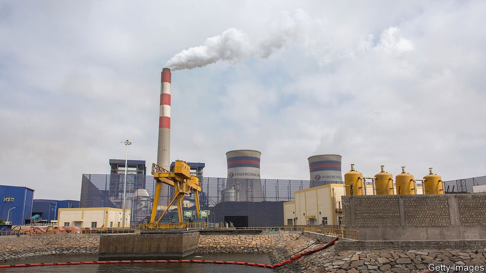
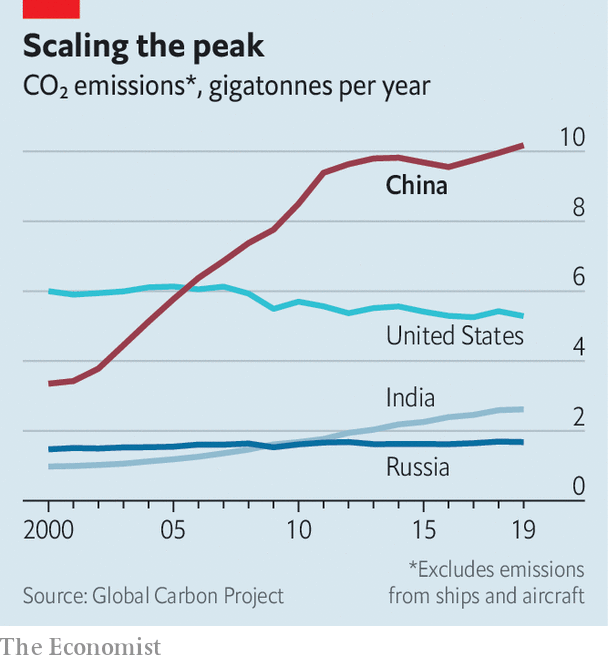
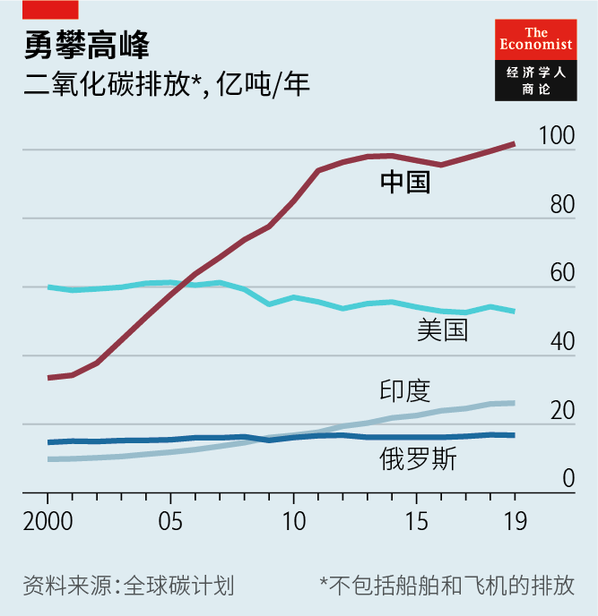
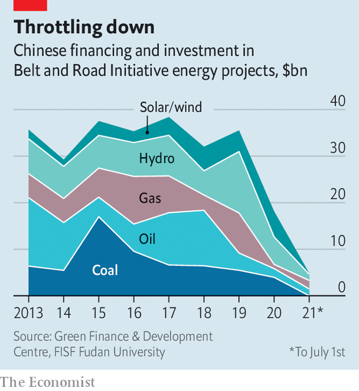
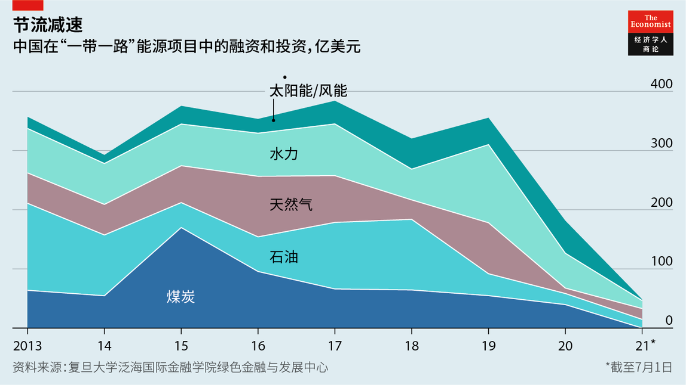

Text
2021-10-13T05:55:17+00:00
Low-hanging fruit
可轻松摘取的成果
可輕鬆摘取的成果
China pledges to stop financing coal plants abroad
中国承诺不再资助海外煤电项目
中國承諾不再資助海外煤電項目
Will it have more to offer at the climate summit in Glasgow?
在格拉斯哥举行的气候峰会上，中国还会做出更多承诺吗？
在格拉斯哥舉行的氣候峰會上，中國還會做出更多承諾嗎？
IN A SPEECH by video-link, Xi Jinping, China’s president, told the UN on September 21st that his country would stop supporting new coal-power projects overseas. Since 2013, 95% of the funding for coal-fired power plants that came from outside the countries where the plants are located has come from China, Japan and South Korea. In April South Korea vowed to end state-backed financing of coal plants abroad; in June Japan pledged to do the same. Climate campaigners are celebrating China’s decision to follow suit.
九月二十一日，中国国家主席习近平以视频形式在联合国大会上发言，宣布中国将不再新建境外煤电项目。自2013年以来，燃煤电厂从其所在国以外获得的资金中有95%来自中国、日本和韩国。今年4月，韩国承诺将终止对海外燃煤电厂提供国家公共资金；6月，日本做出了同样的承诺。现在，气候活动人士欢庆中国也跟进的决定。
九月二十一日，中國國家主席習近平以視頻形式在聯合國大會上發言，宣布中國將不再新建境外煤電項目。自2013年以來，燃煤電廠從其所在國以外獲得的資金中有95%來自中國、日本和韓國。今年4月，韓國承諾將終止對海外燃煤電廠提供國家公共資金；6月，日本做出了同樣的承諾。現在，氣候活動人士歡慶中國也跟進的決定。
By some estimates, 70% of all coal plants being built today rely to some degree on China’s cash. Cutting off this source will hobble the building and operation of such projects in poor countries, where demand for power is often difficult to meet without foreign help. But by mentioning only overseas coal, Mr Xi glossed over China’s own dependence on the stuff. Last year, the country’s power plants produced over half the world’s coal-generated electricity. It continued adding new coal-fired power capacity at a pace of roughly a new coal plant a week. China is already moving away from funding coal plants abroad anyway, mostly because of the falling price of renewable energy.
据一些估计，目前在建的所有燃煤电厂中有70%在一定程度上依赖中国的资金。切断这一资金来源将阻碍在贫穷国家建设和运营这类项目——这些地区在没有外国帮助的情况下往往难以满足用电需求。但习近平只提到了海外煤炭，避而不谈中国自己对这些资源的依赖。去年，中国发电厂的燃煤发电量占全世界的一半以上。它仍在以大约每周新建一座燃煤电厂的速度增加煤电装机容量。中国原本就已经在逐渐停止为海外燃煤电厂提供资金，主要是因为可再生能源的价格不断下跌。
據一些估計，目前在建的所有燃煤電廠中有70%在一定程度上依賴中國的資金。切斷這一資金來源將阻礙在貧窮國家建設和運營這類項目——這些地區在沒有外國幫助的情況下往往難以滿足用電需求。但習近平只提到了海外煤炭，避而不談中國自己對這些資源的依賴。去年，中國發電廠的燃煤發電量佔全世界的一半以上。它仍在以大約每周新建一座燃煤電廠的速度增加煤電裝機容量。中國原本就已經在逐漸停止為海外燃煤電廠提供資金，主要是因為可再生能源的價格不斷下跌。
However, the gesture is at least a sign that China does not want to be seen as a spoiler of global climate-change efforts. John Kerry, President Joe Biden’s climate envoy, had been urging China to make a pledge of this kind. But China had warned that climate-change co-operation with America could be jeopardised by tension in the two countries’ relationship. Now tongues are wagging about whether China might have more good news to announce at COP26, the UN climate summit that is due to be held in Glasgow in November. (Mr Xi is unlikely to attend in person—since the pandemic began, he has shunned travel abroad.)
不过，这一姿态至少表明，中国不想被认为是全球气候变化应对计划的破坏者。美国总统拜登的气候特使约翰·克里（John Kerry）一直在敦促中国做出这类承诺。而中国也警告说中美关系紧张可能会损害两国在气候变化方面的合作。至于在11月将于格拉斯哥举行的联合国气候变化大会COP26上，中国是否会宣布更多好消息，目前仍众说纷纭。（习近平本人不太可能到场，自新冠疫情爆发以来他一直避免出国。）
不過，這一姿態至少表明，中國不想被認為是全球氣候變化應對計劃的破壞者。美國總統拜登的氣候特使約翰·克里（John Kerry）一直在敦促中國做出這類承諾。而中國也警告說中美關係緊張可能會損害兩國在氣候變化方面的合作。至於在11月將于格拉斯哥舉行的聯合國氣候變化大會COP26上，中國是否會宣布更多好消息，目前仍眾說紛紜。（習近平本人不太可能到場，自新冠疫情爆發以來他一直避免出國。）
The speculation mainly surrounds China’s plans for cutting emissions of greenhouse gases. The most tantalising possibility is that the country will move forward the date by which it aims for its carbon emissions to reach a peak: currently 2030. (A year ago, Mr Xi also said China would strive for “carbon neutrality”—a balance between carbon emissions and carbon reduction—by 2060). Given that China is the world’s largest emitter, an earlier peak could make a big difference to the world’s climate prospects, especially if it is followed by a marked decline.
这些猜测主要围绕中国削减温室气体排放的计划。最激动人心的可能性是中国会把它碳达峰的时间提前；目前设为2030年。（一年前，习近平也表示中国将努力在2060年前实现“碳中和”，即碳排放量和减排量达到平衡。）因为中国是世界上最大的排放国，碳达峰提前可能会对世界气候前景产生重大影响，特别是碳排放量随后显著下降的话。
這些猜測主要圍繞中國削減溫室氣體排放的計劃。最激動人心的可能性是中國會把它碳達峰的時間提前；目前設為2030年。（一年前，習近平也表示中國將努力在2060年前實現“碳中和”，即碳排放量和減排量達到平衡。）因為中國是世界上最大的排放國，碳達峰提前可能會對世界氣候前景產生重大影響，特別是碳排放量隨後顯著下降的話。
Many analysts argue that China could, with effort, achieve an emissions peak in 2025. But Li Shuo, an analyst for Greenpeace, an environmental NGO, says China is unlikely to make a formal commitment to this effect. It would require shutting down many coal plants and overhauling the current five-year economic plan, which took effect this year.
许多分析人士认为，中国努努力，就有可能在2025年实现碳达峰。但环保非政府组织绿色和平的分析师李硕表示，中国不太可能对此做出正式承诺。这需要关闭许多燃煤电厂，还要对今年起生效的新的五年经济规划做全面调整。
許多分析人士認為，中國努努力，就有可能在2025年實現碳達峰。但環保非政府組織綠色和平的分析師李碩表示，中國不太可能對此做出正式承諾。這需要關閉許多燃煤電廠，還要對今年起生效的新的五年經濟規劃做全面調整。
A G20 summit in July gave a flavour of things to come. Italy presided over the event and was keen to extract a commitment to phase out coal power. China, among others, was reluctant. It also resisted a push for faster decarbonisation to prevent more than 1.5°C of global warming above preindustrial temperatures (the Paris agreement on climate change, reached in 2015, calls for the stabilisation of temperatures somewhere between 1.5°C and “well below” 2°C). But with thermometers showing roughly 1.1-1.2°C of warming already, it would take a Herculean effort to achieve that goal. China knows much of the task would fall on its shoulders.■
7月召开的一次G20峰会让人一瞥未来的形势。意大利主持了这次会议，迫切想让各国就逐步淘汰煤炭发电做出承诺。中国和其他一些国家都不大情愿。中国也拒绝了加快脱碳以争取把全球升温控制在比工业化前高1.5°C以内的提议（2015年达成的针对气候变化的《巴黎协定》呼吁将升温幅度控制在1.5°C和“远低于”2°C之间）。但温度计显示全球温度已经上升了约1.1°C至1.2°C，要实现这样的目标需要付出巨大的努力。中国明白很大一部分任务会落到自己肩上。
7月召開的一次G20峰會讓人一瞥未來的形勢。意大利主持了這次會議，迫切想讓各國就逐步淘汰煤炭發電做出承諾。中國和其他一些國家都不大情願。中國也拒絕了加快脫碳以爭取把全球升溫控制在比工業化前高1.5°C以內的提議（2015年達成的針對氣候變化的《巴黎協定》呼籲將升溫幅度控制在1.5°C和“遠低於”2°C之間）。但溫度計顯示全球溫度已經上升了約1.1°C至1.2°C，要實現這樣的目標需要付出巨大的努力。中國明白很大一部分任務會落到自己肩上。